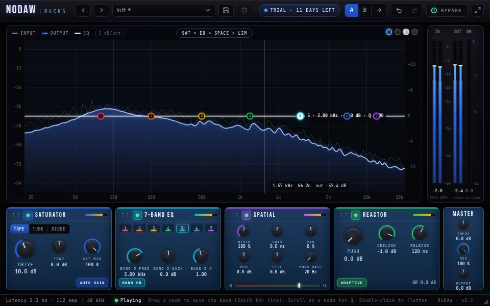

Four modules.
Any order.
A modular channel strip: Saturator, 7-band EQ, Spatial and Reactor in a chain you reorder by dragging the module headers, each with its own power switch, then a master section.

Change Chain Order to hear the same settings in a different order. Drop any audio file on this panel to use your own. Double-click a slider to reset it. Space plays and stops. Export renders offline with the current settings.
What’s real here.
- PortedThe engine: all four modules (Saturator with Tape/Tube/Diode and 2× oversampling, the 7-band EQ, Spatial with Haas and Mono Bass, the Reactor true-peak limiter), all 24 chain orders and the master section.
- ParamsAll 53 parameters plus bypass, with the plugin’s own ranges, units and curves (54 host parameters in the plugin).
- PresetsAll 12 factory presets, by name and value, read from the plugin’s preset files.
- A/BBypass uses the engine’s own crossfade to the latency-delayed dry signal, so the switch never clicks.
- Plugin onlyDrag-to-reorder module headers (here the order is a dropdown with the same 24 orders)
- Plugin onlyThe four skins, the EQ nodes you drag on the analyser and the plugin’s meters
- Plugin onlyDAW automation, MIDI learn, undo/redo, A/B slots and user presets
- StatusThe Racks plugin (VST3 + CLAP, Windows x64) is in development: unreleased, not for sale, no price yet.
Racks, stage by stage.

Drag the EQ on the analyser
Seven bands: bands 1 and 7 switch between shelf and 12 dB/oct cut, the rest are bells. Drag the nodes on the spectrum.

Tape, Tube or Diode
The Saturator has three curves with 2× oversampling, plus Drive, Tone, Sat Mix and Auto Gain.

Four skins
Cobalt, obsidian, silver and plastic, with a spectrum, the EQ curve, in/out meters and gain reduction.
Spatial
Width, Haas, Pan, Mid and Side gain, and Mono Bass below a set frequency, with a correlation meter.
Reactor
A limiter with a fixed 1.5 ms lookahead and true-peak detection: Push, Ceiling, Release and Adaptive release.
Master
Input, Mix and Output, with bypass and mix sample-aligned to the latency-delayed dry signal.
 ScrewChopped & screwed
ScrewChopped & screwed Harmonic SpaceSpectral Space Designer
Harmonic SpaceSpectral Space Designer Chronos Dynamic EQSeven dynamic bands
Chronos Dynamic EQSeven dynamic bands Temporal Pitch PortalTempo-synced time warp
Temporal Pitch PortalTempo-synced time warp Chronos WeaverSpectral morph, freeze & cloud
Chronos WeaverSpectral morph, freeze & cloud